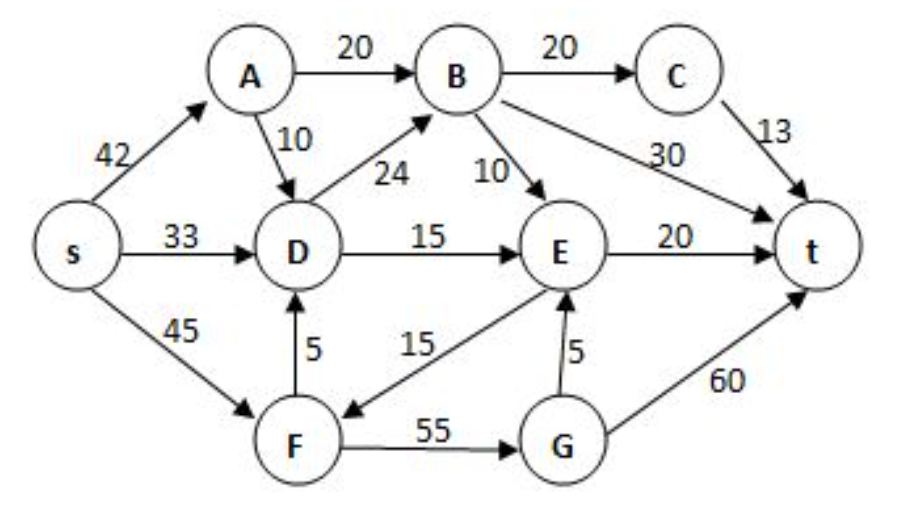

Problems & keys
时间复杂度分析
1. For the following piece of code:
if ( A > B ){
for ( i=0; i<N*2; i++ )
for ( j=N*N; j>i; j-- )
C += A;
}
else {
for ( i=0; i<N*N/100; i++ )
for ( j=N; j>i; j-- )
for ( k=0; k<N*3; k++)
C += B;
}
the lowest upper bound of the time complexity is \(O(N^3)\).
Key：T
对于包含 if-else 条件分支的代码结构，其整体的时间复杂度由这两个分支中时间复杂度最高的那一个决定。用渐近符号表示为：\(T(N) = O(\max(T_{if}, T_{else}))\)。
分析 if 分支
-
第一层循环：变量 \(i\) 从 \(0\) 递增到 \(2N - 1\)，总共执行 \(2N\) 次。
-
第二层循环：对于外层循环的每一个确定的 \(i\) 值，变量 \(j\) 从 \(N^2\) 递减，直到 \(j = i + 1\) 停止。因此，内层循环会执行 \(N^2 - i\) 次。
将基本操作 C += A 的总执行次数写成求和公式：
将求和式拆开并计算：
在 Big-O 渐近分析中，我们只保留最高阶项并忽略常数系数。因此，if 分支的时间复杂度为 \(O(N^3)\)。
分析 else 分支
for ( i=0; i<N*N/100; i++ ) // 第一层循环
for ( j=N; j>i; j-- ) // 第二层循环
for ( k=0; k<N*3; k++) // 第三层循环
C += B; // O(1) 基本操作
特别注意第二层循环的执行条件。
-
第一层循环：\(i\) 从 \(0\) 循环到 \(\frac{N^2}{100} - 1\)。
-
第二层循环：\(j\) 的初始值是 \(N\)，并且只有当 \(j > i\)（即 \(N > i\)）时才会进入循环。这意味着，当 \(i \ge N\) 时，第二层循环的条件一开始就是假的，循环体不会被执行。
因此，第一层循环可以按 \(i\) 的取值范围分为两个阶段计算：
-
阶段一：当 \(i < N\) 时 (即 \(i\) 从 \(0\) 到 \(N-1\))
此时满足 \(N > i\)，会进入内层嵌套循环。
第二层循环执行次数：\(N - i\) 次。
第三层循环执行次数：\(3N\) 次。
这部分的执行次数之和为：
\[ \sum_{i=0}^{N-1}((N-i)\cdot3N)=3N\sum_{i=0}^{N-1}(N-i)=3N\cdot\frac{N(N+1)}{2}=\frac{3}{2}N^3+\frac{3}{2}N^2 \]提取最高阶项，这一阶段的复杂度是 \(O(N^3)\)。
-
阶段二：当 \(i \ge N\) 时 (即 \(i\) 从 \(N\) 到 \(\frac{N^2}{100} - 1\))
此时 \(N > i\) 不成立，第二层和第三层循环完全被跳过。程序仅执行第一层循环的条件判断和
i++操作。这部分的执行次数是：\(\frac{N^2}{100} - N\)。
提取最高阶项，这一阶段的复杂度是 \(O(N^2)\)。
将两个阶段加起来，else 分支的总时间复杂度是 \(O(N^3) + O(N^2)\)，最终取决于最高阶项，即 \(O(N^3)\)。
2. \((\log n)^100\) is \(O(n^{0.01})\).
Key: T
任何多项式函数最终都会比任何对数多项式函数增长得快。即对于任意常数 \(k > 0\) 和 \(c > 0\)，都有 \((\log n)^k = O(n^c)\)。在这里 \(k=100\)， \(c=0.01\)。虽然在 \(n\) 较小的时候，\((\log n)^{100}\) 可能很大，但随着 \(n\) 趋向于无穷大，\(n^{0.01}\) 的增长速度最终会超过它。(多项式时间总是渐近大于对数时间。)
3. 主定理及其应用
The recurrent equations for the time complexities of programs P1 and P2 are:
-
P1: \(T(1) = 1, T(N) = T(N/3) + 1\)
-
P2: \(T(1) = 1, T(N) = 3T(N/3) + 1\)
Then the correct conclusion about their time complexities is:
-
A. they are both \(O(\log N)\)
-
B. \(O(\log N)\) for P1, \(O(N)\) for P2
-
C. they are both \(O(N)\)
-
D. \(O(\log N)\) for P1, \(O(N \log N)\) for P2
Key: B
Master Theorem
主定理在算法分析中用来快速求解分治算法时间复杂度递推关系。
通常，分治算法的时间复杂度可以表示为如下形式的递推方程：
参数含义：
-
\(N\): 问题的当前规模。
-
\(a\): 每次递归调用时，将问题分解为子问题的个数（即递归分支的数量），要求 \(a \ge 1\)。
-
\(b\): 每次递归时，子问题规模缩小的倍数（例如二分法中 \(b=2\)），要求 \(b > 1\)。
-
\(O(N^d)\): 分解问题和合并子问题结果所需的额外时间开销。其中 \(d \ge 0\)。
主定理的三种情况:
主定理的核心思想是比较 “递归树叶子节点的计算量” 与 “根节点及各层合并操作的计算量”，谁占主导地位，时间复杂度就由谁决定。通过比较 \(a\) 和 \(b^d\) （或者比较 \(\log_b a\) 和 \(d\)）来得出结论：
-
情况 1：叶子节点占主导
如果 \(a > b^d\) (即 \(\log_b a > d\))
这意味着子问题的数量增长速度超过了合并代价的增长速度，计算量主要集中在递归树的底层（叶子节点）。
结论： \(T(N) = O(N^{\log_b a})\)
-
情况 2：各层代价均衡
如果 \(a = b^d\) (即 \(\log_b a = d\))
这意味着递归树每一层的计算代价大致相同。总时间复杂度等于每一层的代价乘上树的深度（\(\log N\)）。
结论： \(T(N) = O(N^d \log N)\) 或等价地写作 \(O(N^{\log_b a} \log N)\)
-
情况 3：根节点占主导
如果 \(a < b^d\) (即 \(\log_b a < d\))
这意味着合并操作的代价占了绝对主导，递归层级越深，总代价越小，计算主要集中在顶层。
结论： \(T(N) = O(N^d)\)
分析 P1: \(T(N) = T(N/3) + 1\)
对照标准形式 \(T(N) = aT(N/b) + O(N^d)\)：
-
\(a = 1\) (1 个递归分支)
-
\(b = 3\) (规模缩小 3 倍)
-
后面附加的常数操作 \(+ 1\)，可以看作是 \(N^0\)，因此 \(d = 0\)。
现在计算并比较 \(\log_b a\) 与 \(d\)：
-
\(\log_b a = \log_3 1 = 0\)
-
\(d = 0\)
因为 \(\log_b a = d\)（即 \(0 = 0\)），这符合主定理的情况 2。
代入公式：\(T(N) = O(N^d \log N) = O(N^0 \log N) = O(\log N)\)。
(经典的二分或三分查找的复杂度，每次规模缩小，操作次数为对数级)。
分析 P2: \(T(N) = 3T(N/3) + 1\)
对照标准形式：
-
\(a = 3\) (3 个递归分支)
-
\(b = 3\) (规模缩小 3 倍)
-
附加常数 \(+ 1\) 同样意味着 \(d = 0\)。
计算并比较 \(\log_b a\) 与 \(d\)：
-
\(\log_b a = \log_3 3 = 1\)
-
\(d = 0\)
因为 \(\log_b a > d\)（即 \(1 > 0\)），这符合主定理的情况 1（叶节点占主导）。
代入公式：\(T(N) = O(N^{\log_b a}) = O(N^1) = O(N)\)。
Tree
1. It is always possible to represent a tree by a one-dimensional integer array.
Key： T (True)
对于二叉树，如果将其视为完全二叉树，可以使用标准的数组索引（若父节点在 \(i\)，则左子节点在 \(2i\)，右子节点在 \(2i+1\)）。对于一般的树（General Tree），可以转化为二叉树，将完全二叉树的部分位置留空即可。
2. Given a tree of degree 3. Suppose that there are 3 nodes of degree 2 and 2 nodes of degree 3. Then the number of leaf nodes must be ___.
Key： D. 8
已知这是一棵一般的树，不是二叉树。设 \(n_i\) 为度数为 \(i\) 的节点个数。
-
已知条件：\(n_2 = 3\), \(n_3 = 2\)
-
节点总数：\(N = n_0 + n_1 + n_2 + n_3\)
-
总边数等于节点度数之和：\(N - 1 = 1 \cdot n_1 + 2 \cdot n_2 + 3 \cdot n_3\)
将 \(N\) 的表达式代入边数公式：
\[ (n_0 + n_1 + n_2 + n_3) - 1 = n_1 + 2n_2 + 3n_3 \]等式两边的 \(n_1\) 互相抵消：
\[ n_0 + n_2 + n_3 - 1 = 2n_2 + 3n_3 \]化简并求解叶子节点数 \(n_0\)：
\[ n_0 = n_2 + 2n_3 + 1 \]代入已知数值：
\[ n_0 = 3 + 2 \times 2 + 1 = 3 + 4 + 1 = 8 \]
3. If a general tree \(T\) is converted into a binary tree \(BT\), then which of the following \(BT\) traversals gives the same sequence as that of the post-order traversal of \(T\)?
Key： B. In-order traversal
将一般树转换为二叉树使用的是“左孩子-右兄弟（First Child-Next Sibling）”表示法。
-
一般树的前序遍历（Pre-order），转换后对应二叉树的前序遍历（Pre-order）。
-
一般树的后序遍历（Post-order）（即先访问所有子节点，再访问父节点），转换后对应二叉树的中序遍历（In-order）。
(注：一般树没有标准的中序遍历概念)
判断二叉树同构的函数题
- 注意不要访问空指针；
- 不要遗漏当前节点的判别（只判别子节点）。
```c int Isomorphic(Tree T1, Tree T2) { if (T1 == NULL && T2 == NULL) return 1; if (T1 == NULL || T2 == NULL) return 0; if (T1->Element != T2->Element) return 0;
if (T1->Left == NULL && T2->Left == NULL)
return Isomorphic(T1->Right, T2->Right);
if (T1->Left != NULL && T2->Left != NULL && T1->Left->Element == T2->Left->Element)
return Isomorphic(T1->Left, T2->Left) && Isomorphic(T1->Right, T2->Right);
return Isomorphic(T1->Left, T2->Right) && Isomorphic(T1->Right, T2->Left);
} ```
- 上面的代码无法处理兄弟节点有相同值的情况（贪心算法导致），如果题目可能出现这种情况，需要交换兄弟节点多进行一次递归。
int Isomorphic(Tree T1, Tree T2) {
if (T1 == NULL && T2 == NULL) return 1;
if (T1 == NULL || T2 == NULL) return 0;
if (T1->Element != T2->Element) return 0;
return (Isomorphic(T1->Left, T2->Left) && Isomorphic(T1->Right, T2->Right)) ||
(Isomorphic(T1->Left, T2->Right) && Isomorphic(T1->Right, T2->Left));
}
- 用堆栈模拟中序遍历的递归过程时，所有的
push操作相当于前序遍历的过程（pop是中序遍历）。
Graph
Statement: In a directed graph, the sum of the in-degrees must be equal to the sum of the out-degrees of all the vertices.
-
Answer: True (T)
-
Explanation: Every directed edge in a graph originates from exactly one vertex (acting as the tail) and terminates at exactly one vertex (acting as the head). Therefore, every single edge contributes exactly \(1\) to the total out-degree count and exactly \(1\) to the total in-degree count. Consequently, the sum of all in-degrees across the entire graph will always perfectly match the sum of all out-degrees, and both sums are equal to the total number of edges.
Question: If graph G is NOT connected and has 35 edges, then it must have at least ___ vertices.
-
Answer: D. 10
-
Explanation: To find the minimum number of vertices for a disconnected graph containing a large number of edges, we need to concentrate those edges as densely as possible. The extreme scenario for a disconnected graph is to form a complete graph with \(n-1\) vertices, leaving \(1\) vertex completely isolated.
-
A complete graph with \(n-1\) vertices can hold a maximum of \(\frac{(n-1)(n-2)}{2}\) edges.
-
Since we have 35 edges, we set up the inequality: \(\frac{(n-1)(n-2)}{2} \ge 35\), which simplifies to \((n-1)(n-2) \ge 70\).
-
If \(n-1 = 8\), the maximum number of edges is \(\frac{8 \times 7}{2} = 28\) (not enough to hold 35 edges).
-
If \(n-1 = 9\), the maximum number of edges is \(\frac{9 \times 8}{2} = 36\) (which is enough to comfortably hold 35 edges while remaining connected within that subset).
-
Therefore, we need \(9\) vertices for the dense component and \(1\) isolated vertex to make it disconnected. The minimum total number of vertices is \(n = 9 + 1 = 10\).
-
Question: A graph with 90 vertices and 20 edges must have at most __ connected component(s).
-
Answer: C. 84
-
Explanation: To maximize the number of connected components, you must "spend" your 20 edges on the fewest possible number of vertices, leaving as many vertices as possible completely isolated (degree 0).
-
Let's find the minimum number of vertices, \(k\), needed to form a complete graph that can absorb all 20 edges. The formula is \(\frac{k(k-1)}{2} \ge 20\), meaning \(k(k-1) \ge 40\).
-
If \(k = 6\), we can only hold \(15\) edges. If \(k = 7\), we can hold up to \(21\) edges, which is enough to absorb our 20 edges.
-
So, we use \(7\) vertices to absorb all the edges. These \(7\) vertices form 1 connected component.
-
The remaining \(90 - 7 = 83\) vertices have no edges at all. Each of these isolated vertices counts as its own individual connected component.
-
Maximum total components = \(1 \text{ (the dense group)} + 83 \text{ (the isolated vertices)} = 84\).
-
Question: Given the adjacency list of a directed graph as shown by the figure. There is(are) __ strongly connected component(s).
-
Answer: B. 3 ({2}, {4}, {0, 1, 3, 5})
-
Explanation: A Strongly Connected Component (SCC) is a maximal subset of vertices where there is a directed path from any vertex to every other vertex in that subset (essentially, they form loops/cycles). Let's trace the edges from the list:
-
\(0 \rightarrow 5, 1 \rightarrow \{0, 3\}, 2 \rightarrow \{1, 4\}, 3 \rightarrow \{0, 4\}, 4 \rightarrow \text{none}, 5 \rightarrow 1\).
-
Finding Cycles: \(0 \rightarrow 5 \rightarrow 1 \rightarrow 0\) is a cycle. Also, \(1 \rightarrow 3 \rightarrow 0 \rightarrow 5 \rightarrow 1\) is a cycle. Because they all mutually reach each other, {0, 1, 3, 5} merges into one large SCC.
-
Checking the rest: Vertex \(4\) has no outgoing edges (out-degree is 0), meaning it can't reach anyone else. It forms an SCC by itself: {4}.
-
Vertex \(2\) has outgoing edges, but no incoming edges (nobody points to 2). Since you can leave 2 but never come back, it cannot be part of any cycle. It forms an SCC by itself: {2}.
-
Total SCCs = 3.
-
Question: Given an undirected graph G with 16 edges, where 3 vertices are of degree 4, 4 vertices are of degree 3, and all the other vertices are of degrees less than 3. Then G must have at least __ vertices.
-
Answer: B. 11
-
Explanation: This problem relies on the Handshaking Lemma, which states that the sum of the degrees of all vertices in a graph is exactly twice the number of edges.
-
Total sum of degrees = \(2 \times 16 = 32\).
-
Calculate the degree sum of the known vertices: \((3 \text{ vertices} \times 4) + (4 \text{ vertices} \times 3) = 12 + 12 = 24\).
-
The remaining degree points that need to be distributed to the "other" vertices = \(32 - 24 = 8\).
-
The problem states these "other" vertices have degrees less than 3 (i.e., their maximum possible degree is 2). To minimize the number of these "other" vertices, we must maximize the degree we assign to each of them. So, we assign a degree of \(2\) to all of them.
-
Number of "other" vertices required = \(8 / 2 = 4\) vertices.
-
Total minimum vertices = \(3 \text{ (deg 4)} + 4 \text{ (deg 3)} + 4 \text{ (deg 2)} = 11\).
-
Statement: Let P be the shortest path from S to T. If the weight of every edge in the graph is incremented by 2, P will still be the shortest path from S to T.
-
Answer: False (F)
-
Explanation: Adding a positive constant weight to every edge in a graph disproportionately penalizes paths that are made up of a larger number of edges. Because of this, a path with fewer edges might suddenly become the new shortest path.
-
Counter-example: Suppose you have two different paths from \(S\) to \(T\):
-
Path A consists of exactly 1 edge with a weight of 10. (Total distance = 10)
-
Path B consists of 3 edges, each with a weight of 3. (Total distance = 9)
In the original graph, Path B is the shortest path (9 < 10).
Now, add 2 to the weight of every edge:
-
Path A's new distance: 10 + 2 = 12.
-
Path B's new distance: (3 + 2) + (3 + 2) + (3 + 2) = 15.
In the updated graph, Path A is now the shortest path (12 < 15). The shortest path has changed, making the statement false.
-
Question: If besides finding the shortest path from s to every other vertices, we also need to count the number of different shortest paths, we can modify the Dijkstra algorithm in the following way: add an array count[] so that count[V] records the number of different shortest paths from s to V. Then count[V] shall be initialized as:
-
Answer: A.
count[S]=1;andcount[V]=0for otherV -
Explanation: The
count[]array tracks the number of ways to reach a vertex using the currently known shortest distance. The initialization must provide a mathematical "seed" value for the algorithm to function correctly.-
Why
count[S] = 1? At the very beginning of the algorithm (before any exploration), there is exactly one way to reach the source vertex from itself: by taking zero steps (a path of length 0). This1serves as the foundational value that will be passed on to its neighbors. -
Why
count[V] = 0for others? Since the algorithm hasn't discovered any paths to the other vertices yet, the number of known shortest paths to them is naturally 0.
-
-
How it updates during Dijkstra's Algorithm: When you are at vertex \(U\) and checking its neighbor \(V\):
-
Finding a strictly shorter path: If
Dist[U] + Cost(U,V) < Dist[V], you overwrite the old record. The number of ways to reach \(V\) becomes identical to the number of ways to reach \(U\). ->count[V] = count[U] -
Finding an equally short path: If
Dist[U] + Cost(U,V) == Dist[V], you have found an alternative route of the exact same length. You must add these new paths to the existing total. ->count[V] = count[V] + count[U]
-
If you were to initialize count[S] = 0, every subsequent assignment or addition in the algorithm would just pass along zeros, rendering the entire counting mechanism useless.
Question: The minimum spanning tree of any weighted graph ___
- Answer: C. exists but may not be unique
Question: The maximum flow in the network of the given Figure is:

-
Answer: A. 104
-
Explanation: To accurately determine the maximum flow without guessing, we use the Max-Flow Min-Cut Theorem, which states that the maximum flow through a network is exactly equal to the capacity of its minimum cut.
A "cut" partitions the graph's nodes into two sets: one containing the source (\(s\)) and the other containing the sink (\(t\)). The capacity of the cut is the sum of all forward edges crossing from the source set to the sink set. Let's find the bottleneck (the minimum cut):
1. Identify the Bottleneck Nodes:
-
Look at Node A: The incoming capacity from \(s\) is 42. However, its total outgoing capacity is only \(20 \text{ (to B)} + 10 \text{ (to D)} = 30\). This means Node A is a severe bottleneck; it can never process more than 30 units of flow.
-
Look at Node D: It can potentially receive \(33 \text{ (from s)} + 10 \text{ (from A)} + 5 \text{ (from F)} = 48\). However, its total outgoing capacity is only \(24 \text{ (to B)} + 15 \text{ (to E)} = 39\). Node D is also a bottleneck.
2. Define the Cut:
Because nodes \(A\) and \(D\) are restricted by their outgoing pipes rather than their incoming ones, they form a "traffic jam" right at the source. We should group them with the source to find the true bottleneck boundary.
-
Source Set (\(S\)): \(\{s, A, D\}\)
-
Sink Set (\(T\)): \(\{B, C, E, F, G, t\}\)
3. Calculate the Cut Capacity:
We sum up the capacities of all directed edges pointing from our Source Set (\(S\)) to our Sink Set (\(T\)):
-
Edge \(s \to F\): 45
-
Edge \(A \to B\): 20
-
Edge \(D \to B\): 24
-
Edge \(D \to E\): 15
(Note: Edges like \(s \to A\) or \(A \to D\) are completely inside the Source Set, so they don't cross the boundary. The edge \(F \to D\) goes backward from \(T\) to \(S\), so we ignore it.)
Total Cut Capacity = \(45 + 20 + 24 + 15 = 104\).
Because we found a cut that strictly limits the flow to 104, the maximum possible flow of the entire network cannot exceed this value.
-
Here are the detailed English explanations for questions 1-2, 2-1, 2-2, and a deep dive into 2-4 as you requested.
Question: After the first run of Insertion Sort, it is possible that no element is placed in its final position.
-
Answer: True (T)
-
Explanation: The fundamental characteristic of Insertion Sort is that after the \(k\)-th pass, it only guarantees that the first \(k+1\) elements are sorted relative to each other. It does not guarantee that any of them have reached their final global positions.
For example, suppose we want to sort
[3, 2, 1]into ascending order. After the first pass (inserting2), the array becomes[2, 3, 1]. None of these elements are in their final correct positions, which should be[1, 2, 3].
Question: Apply DFS to a directed acyclic graph, and output the vertex before the end of each recursion. The output sequence will be:
-
Answer: reversely topologically sorted
-
Explanation: Outputting a vertex "before the end of each recursion" means you are printing it during the backtracking phase (this is a Post-Order traversal). In a Directed Acyclic Graph (DAG), a DFS will reach the "sink" nodes (nodes with no outgoing edges) first, finish their recursive calls, and print them. These sink nodes are exactly the ones that should appear last in a standard topological sort. Therefore, a post-order DFS naturally produces the exact reverse of a topological sort.
Question: Graph G is an undirected completed graph of 20 nodes. Is there an Euler circuit in G? If not, in order to have an Euler circuit, what is the minimum number of edges which should be removed from G?
-
Answer: No, Graph G has no Euler circuit. 10 edges should be removed.
-
Explanation:
-
Why no Euler circuit? An Euler circuit only exists if the graph is connected and every vertex has an even degree. In an undirected complete graph (\(K_{20}\)), every node is connected to every other node. Therefore, the degree of every single node is exactly \(19\) (which is odd). Since there are odd-degree vertices, an Euler circuit is impossible.
-
Why remove 10 edges? To make an Euler circuit possible, we must change all \(20\) odd degrees into even degrees. Removing exactly one edge between two nodes reduces the degree of both those nodes by 1 (changing them from 19 to 18, an even number). Since we need to fix 20 nodes, and each removed edge fixes 2 nodes, we need to remove a minimum of \(20 / 2 = 10\) entirely disjoint edges.
-
Sorting
Question: Use simple insertion sort to sort 10 numbers from non-decreasing to non-increasing, the possible numbers of comparisons and movements are:
- Answer: 54, 63
What is a "Sentinel" in Insertion Sort?
In a standard Insertion Sort, when you are shifting elements to the right to make room for the new element, your inner loop usually looks like this:
while (j >= 0 && array[j] > current_element)
This requires two checks per iteration: one to ensure we don't go out of array bounds (j >= 0), and one to compare the values.
To optimize this, classic data structure textbooks use a Sentinel.
-
We leave
A[0]empty initially. The actual data is stored fromA[1]toA[N]. -
When we want to insert element
A[i], we first copy it intoA[0]:A[0] = A[i];. -
Now,
A[0]acts as the element being inserted AND as the boundary guard. The inner loop simplifies to:while (A[0] > A[j]).Because
A[0]will eventually compare with itself at index 0, the loop is guaranteed to terminate without ever needing a bounds check (j >= 0). This saves processing time!
Calculating the Worst-Case Scenario
The problem asks us to sort 10 numbers from "non-decreasing" (e.g., 1, 2, 3... 10) to "non-increasing" (e.g., 10, 9, 8... 1). This means every new element we process is larger than all the ones before it, but because we want descending order, it must be moved all the way to the very front. This is the absolute worst-case scenario.
Here is the exact step-by-step breakdown for \(N=10\). We process elements from \(i = 2\) up to \(i = 10\).
For any pass \(i\):
-
Comparisons: The element
A[i]is compared againstA[i-1], thenA[i-2], all the way down toA[1]. Finally, it gets compared againstA[0](the sentinel) where the loop naturally terminates.- Total Comparisons for pass \(i\): exactly \(i\) comparisons.
-
Movements:
-
Move the element into the sentinel:
A[0] = A[i](1 move). -
Shift all previous elements to the right:
A[i-1]moves toA[i],A[i-2]moves toA[i-1], etc., down toA[1]moving toA[2]. This is \(i-1\) moves. -
Move the sentinel into the now-empty first slot:
A[1] = A[0](1 move). -
Total Movements for pass \(i\): \(1 + (i-1) + 1 =\) \(i + 1\) movements.
-
Calculating the Grand Totals:
Since the outer loop runs from \(i = 2\) to \(i = 10\):
-
Total Comparisons: \(\sum_{i=2}^{10} i = 2 + 3 + 4 + 5 + 6 + 7 + 8 + 9 + 10 = \mathbf{54}\)
-
Total Movements: \(\sum_{i=2}^{10} (i+1) = 3 + 4 + 5 + 6 + 7 + 8 + 9 + 10 + 11 = \mathbf{63}\)
Question: For the extra space taken by an internal sorting algorithm, we have: heap sort > merge sort > quick sort.
Answer: False
Explanation: The statement incorrectly ranks the space complexities of these algorithms. The actual extra space requirements are:
-
Merge Sort: \(O(N)\) — requires an auxiliary array of the same size as the input to merge sub-arrays.
-
Quick Sort: \(O(\log N)\) on average, \(O(N)\) in the worst case — requires space for the recursion call stack.
-
Heap Sort: \(O(1)\) — sorts entirely in-place.
Therefore, the correct order for the extra space taken is: Merge Sort > Quick Sort > Heap Sort.
Question: Quicksort is applied to sort an array of \(n\) (\(n \ge 3\)) elements. After the first run, if the rest of the \(n-1\) elements except the pivot are partitioned into two blocks P and Q that are both non-empty, which of the following statements is true?
-
A. P and Q are ordered between the blocks.
-
B. P and Q are both ordered within the blocks.
-
C. The sizes (number of elements) of P and Q are about the same.
-
D. P and Q must both have distinct elements.
Answer: A. P and Q are ordered between the blocks.
Explanation: The core mechanism of Quicksort's partition step ensures that all elements in block P are \(\le\) the pivot, and all elements in block Q are \(\ge\) the pivot. This guarantees that the two blocks are ordered relative to each other (i.e., no element in P is greater than any element in Q). However, the elements within block P and block Q generally remain unsorted until further recursive calls are made.
Question: A test examined two courses, namely C1 and C2. The scores of C1 and C2 are stored in array M, together with the total scores (the sum of the scores of C1 and C2). The students are supposed to be ranked according to their total scores in non-increasing order. In case there is a tie, the one with greater C1 score is ranked higher. If there is still a tie, they are ranked according to their original order. If the correct result is obtained by sorting M by C1 scores first, then by sorting M again by the total scores, which one of the following gives the name of this sorting method?
-
A. Radix sort
-
B. Quick sort
-
C. Shell sort
-
D. Selection sort
Answer: A. Radix sort
Explanation: This process describes a multi-key sorting strategy. Sorting by the least significant key first (the secondary key: C1 scores) and subsequently sorting by the most significant key (the primary key: total scores) is the fundamental principle of Least Significant Digit (LSD) Radix Sort. Note that for this sequence to yield the correct final ranking while preserving the initial original order for ties, the underlying sorting algorithm used for both passes must be stable.
荷兰国旗问题 (Dutch National Flag Problem)
荷兰国旗问题是由著名计算机科学家艾兹格·迪杰斯特拉（Edsger W. Dijkstra）提出的一个经典算法问题。
问题的背景是：荷兰国旗由红、白、蓝三种颜色的条纹组成。假设你有一个由这三种颜色组成的随机顺序的条块数组（或者是包含 0, 1, 2 三个数字的数组，分别代表这三种颜色）。
目标：
将这个数组进行排序，使得所有相同颜色的条块都放在一起，并且顺序必须是：红、白、蓝（即 0, 1, 2）。
约束条件：
-
必须在原地（In-place）进行排序，即空间复杂度为 \(O(1)\)。
-
最好只遍历数组一次（即时间复杂度为 \(O(N)\)）。
解决方法：三指针法
解决荷兰国旗问题的最佳方法是使用三个指针（通常命名为 p0, curr, p2 或 low, mid, high）。这个方法本质上是快速排序（Quick Sort）中划分（Partition）思想的一种变体。
我们将数组划分为四个区域，并通过遍历逐步缩小未知区域：
-
红色区域（全 0）：位于数组的最左侧。
-
白色区域（全 1）：紧挨着红色区域。
-
未知区域：当前尚未处理的元素。
-
蓝色区域（全 2）：位于数组的最右侧。
指针定义：
-
p0(左指针)：指向红色区域（0）的右边界。也就是说，p0左边的元素全都是 0。初始值为 0。 -
curr(当前指针/游标)：用于遍历数组，指向当前正在处理的未知区域的元素。初始值为 0。 -
p2(右指针)：指向蓝色区域（2）的左边界。也就是说，p2右边的元素全都是 2。初始值为数组的最后一个索引n-1。
算法步骤：
让 curr 从头开始向右遍历，直到它与 p2 交汇（即 curr > p2 时结束遍历）：
-
如果
nums[curr] == 0(红色)：-
这个元素应该被放在红色区域。
-
将其与
p0指向的元素交换。 -
因为我们已经确定了
p0处的新元素是 0，且被交换到curr处的元素（原来在p0处的）一定是 1（因为如果它是 2，它早就被丢到后面去了；如果它是 0，它已经在正确的位置。实际上，在curr > p0时，p0到curr-1之间的元素全是 1）。 -
所以，将
p0和curr都向右移动一位 (p0++,curr++)。
-
-
如果
nums[curr] == 1(白色)：-
这个元素已经在正确的位置（白色区域）。
-
只需将
curr向右移动一位 (curr++)。
-
-
如果
nums[curr] == 2(蓝色)：-
这个元素应该被放在蓝色区域。
-
将其与
p2指向的元素交换。 -
交换后，
p2处的值变成了 2，所以p2向左移动一位 (p2--)。 -
关键点： 此时被交换到
curr处的新元素来自未处理区域的尾部，我们不知道它是 0、1 还是 2。因此，curr不能移动，需要在下一步继续判断交换过来的新元素。
-
代码实现 (Python)
def sortColors(nums):
"""
:type nums: List[int]
:rtype: None Do not return anything, modify nums in-place instead.
"""
p0 = 0
curr = 0
p2 = len(nums) - 1
while curr <= p2:
if nums[curr] == 0:
nums[p0], nums[curr] = nums[curr], nums[p0]
p0 += 1
curr += 1
elif nums[curr] == 1:
curr += 1
else: # nums[curr] == 2
nums[p2], nums[curr] = nums[curr], nums[p2]
p2 -= 1
总结
这种解法非常优雅，时间复杂度为 \(O(N)\)（只需遍历一次），空间复杂度为 \(O(1)\)。它巧妙地利用了三个指针动态地维护了三个区域的边界。
Question: To sort \(N\) records by quick sort, the worst-case time complexity is \(O(N\log N)\). (T / F)
Answer: F (False)
Explanation: The worst-case time complexity of Quicksort is \(O(N^2)\). This occurs when the pivot selection consistently yields highly unbalanced partitions—such as always picking the largest or smallest element in an already sorted or reverse-sorted array. The \(O(N\log N)\) complexity represents its average-case performance.
Question: During the sorting, processing every element which is not yet at its final position is called a "run". To sort a list of integers using quick sort, it may reduce the total number of recursions by processing the small partition first in each run. (T / F)
Answer: F (False)
Explanation: Processing the smaller partition first is a classic optimization technique in Quicksort, but it optimizes space complexity (stack depth), not the total number of recursive calls.
-
Why total recursions stay the same: Regardless of the order in which you process sub-arrays, every single element (excluding the chosen pivots) must eventually undergo partitioning until every sub-array reaches the base case (size \(\le 1\)). The total work and total count of recursive tasks are entirely determined by the values of the elements and how evenly the pivots split the data, not by the sequence of execution.
-
What it actually achieves: By processing the smaller sub-array first, a compiler or runtime can leverage tail-call elimination. It pushes the larger sub-array onto the call stack while immediately executing the smaller one. This guarantees that the maximum recursion stack depth is capped at \(O(\log N)\), preventing stack overflow in highly skewed cases.
Question: If there are less than 20 inversions in an integer array, the Quick Sort will be the best method among Quick Sort, Heap Sort and Insertion Sort. (T / F)
Answer: F (False)
Explanation: An inversion is a pair of elements that are out of order. An array with fewer than 20 inversions is considered "nearly sorted." For nearly sorted datasets, Insertion Sort is exceptionally efficient because its time complexity is directly proportional to the number of inversions: \(O(N + I)\), where \(I\) is the number of inversions. When \(I\) is extremely small, Insertion Sort operates in nearly linear time \(O(N)\), easily outperforming both Quicksort and Heap Sort (\(O(N\log N)\)).
Question: During the sorting, processing every element which is not yet at its final position is called a "run". Which of the following cannot be the result after the second run of quicksort?
A. 5, 2, 16, 12, 28, 60, 32, 72
B. 2, 16, 5, 28, 12, 60, 32, 72
C. 2, 12, 16, 5, 28, 32, 72, 60
D. 5, 2, 12, 28, 16, 32, 72, 60
Answer: D
Explanation: To evaluate the options, we first determine the final completely sorted order of the elements: 2, 5, 12, 16, 28, 32, 60, 72. A valid pivot after a quicksort run must occupy its exact sorted index, with all elements to its left being smaller and all elements to its right being larger.
Let's test Option D (5, 2, 12, 28, 16, 32, 72, 60):
-
Identify the pivots in D: The elements currently at their correct sorted positions are 12 (index 2) and 32 (index 5). Both successfully satisfy the pivot rule (all elements to their left are smaller, all elements to their right are larger).
-
Trace the execution history: * For 32 to be a pivot, the first run must have selected
32, partitioning the array into a Left sub-array:[5, 2, 12, 28, 16]and a Right sub-array:[72, 60].-
In the second run, according to the problem's definition, every sub-array not yet sorted must be processed.
-
On the Left side, processing
[5, 2, 12, 28, 16]with12as the pivot correctly creates[5, 2]and[28, 16]. -
On the Right side, the sub-array
[72, 60]contains 2 elements and must also be partitioned during this second run. Whichever element is chosen as the pivot (72or60), the partition step would inherently force them into their correct sorted order:[60, 72].
-
-
Conclusion: In option D, the right sub-array is still left unarranged as
[72, 60], meaning it was completely skipped during the second run. This violates the rules of a concurrent quicksort run, making D an impossible outcome.
Hashing
Question: In hashing, functions "insert" and "find" have the same time complexity.
-
Answer: True
-
Explanation: The underlying mechanism for both "insert" and "find" operations in a hash table is identical: compute the hash value of the key and then follow the collision resolution strategy to locate either the target element or an empty slot. Under ideal conditions (a uniform hash function and a well-maintained load factor), the average time complexity for both operations is \(O(1)\). In the worst-case scenario (e.g., all elements hash to the same value), both operations degrade to \(O(N)\).
Question: Linear probing isn't equivalent to double hashing with a secondary hash function of \(Hash_2(k)=1\).
-
Answer: False
-
Explanation: The probe sequence formula for double hashing is defined as \(H_i(k) = (H(k) + i \times Hash_2(k)) \pmod{M}\). If the secondary hash function returns a constant value of 1 (i.e., \(Hash_2(k) = 1\)), the formula simplifies to \(H_i(k) = (H(k) + i) \pmod{M}\). This simplified formula is the exact definition of linear probing. Therefore, they are perfectly equivalent, making the statement false.
Question: Which of the following statements about HASH is true?
A. The expected number of probes for insertions is greater than that for successful searches in linear probing method.
B. If the table size is prime and the table is at least half empty, a new element can always be inserted with quadratic probing.
C. In separate chaining method, if duplicate elements are allowed in the list, insertions are generally quicker than deletions.
D. All of the above.
-
Answer: D. All of the above
-
Explanation:
-
Statement A is true: In linear probing, inserting a new element functions like an unsuccessful search. It requires probing continuously through a cluster of occupied slots until a genuinely empty slot is encountered. A successful search, however, typically terminates midway through a cluster when the target element is found. Thus, the expected mathematical average of probes required for an insertion is strictly greater than that of a successful search.
-
Statement B is true: This is a mathematically proven theorem for quadratic probing. If the hash table size is a prime number and the load factor \(\lambda < 0.5\) (meaning the table is at least half empty), it is guaranteed that the first \(\lceil TableSize / 2 \rceil\) probes will land on completely distinct slots. This guarantees that an empty slot will always be found and the algorithm will never get stuck in an infinite loop.
-
Statement C is true: In a separate chaining hash table, if duplicate elements are permitted, an insertion simply involves allocating a new node and attaching it directly to the head (front) of the linked list. This is an \(O(1)\) operation. A deletion, however, requires a sequential search (traversing the linked list) to find the matching element before it can be removed, which takes \(O(L)\) time (where \(L\) is the length of the list). Therefore, insertions are inherently quicker.
-
Here is the English version of the question, answer, and detailed explanation for problem 2-3.
Question: Which of the following statements about hashing is incorrect?
A. In hashing with quadratic probing to resolve collisions, a new element can definitely be inserted if the table size is 14 and 7 cells are occupied.
B. If an insertion into the hash table fails, rehashing is necessary, and the new table size is about twice the original size.
C. If in double hashing \(\text{Hash}_2(k) = k^2\), then double hashing effectively becomes quadratic probing.
D. the expected number of probes for insertions is equal to unsuccessful searches in linear probing method.
-
Answer: C
-
Explanation:
-
A. (Correct)
-
B. (Correct): This is the standard definition of rehashing. When a hash table becomes too full (high load factor) or an insertion fails because a probe sequence cannot find an empty slot, the standard protocol is to create a new, larger hash table—typically about twice the size of the original (often the next prime number)—and rehash all existing elements into it.
-
C. (Incorrect Statement): The standard formula for double hashing's probe sequence is \(P(i) = (H_1(k) + i \times H_2(k)) \% m\). If we define \(H_2(k) = k^2\), then for any specific key \(k\) that you are trying to insert, \(k^2\) evaluates to a constant integer.
Because \(k^2\) is a constant for that specific insertion, the probe sequence jumps forward by a fixed, unchanging step size (\(k^2\)) on every attempt \(i\). This is the exact definition of linear probing (just with a step size of \(k^2\) instead of 1). True quadratic probing requires the step size to grow quadratically based on the probe attempt number \(i\) (e.g., adding \(i^2\)), not based on the key \(k\). Therefore, this does not become quadratic probing.
-
D. (Correct)
Question: Given input \(\{4371, 1323, 6173, 4199, 4344, 9679, 1989\}\) and a hash function \(h(X) = X \% 10\). If the collisions are solved by an open addressing hash table with a second hash function \(h_2(X) = 7 - (X \% 7)\) and table size being 10, then the indices of the input numbers in the hash table are: (-1 means the insertion cannot be successful)
-
Answer: B. 1, 3, 4, 9, 7, 5, -1
-
Explanation: The first six numbers insert successfully at indices 1, 3, 4, 9, 7, and 5.
For the last number, 1989: The initial hash is \(h_1(1989) = 9\) (collision). The step size is \(h_2(1989) = 7 - (1989 \% 7) = 6\). The probe sequence follows the indices: 9, 5, 1, 7, 3. Because all these specific slots are already occupied, the sequence enters an infinite loop without finding an empty slot. Thus, insertion fails (-1).
Question: Rehashing is required when an insertion to a hash table fails. Which of the following is NOT necessary to rehashing?
-
Answer: A. change the collision resolution strategy
-
Explanation: When rehashing, you must build a larger table (C), use a new hash function due to the changed modulo base (B), and physically scan the old table to re-insert valid elements (D). You do not need to alter the collision resolution strategy (A); if you were using linear probing, you can continue using linear probing in the new table.
Question: Insert keys \(\{21, 15, 36, 9, 49, 7\}\) one by one into a Robin Hood hash table of size 7, using linear probing and the given hash function \(h(key) = key \% 7\). When search for the number 8, for how many probes it takes to realize that 8 is not in the table?
-
Answer: C. 5
-
Explanation: Following the "rob the rich" rule (a new element displaces an occupant only if the new element's probe distance \(d\) is strictly greater), the final state of the table is:
[0]:21(d=0),[1]:49(d=1),[2]:7(d=2),[3]:15(d=2),[4]:36(d=3),[5]:9(d=3),[6]:Empty.Searching for 8 (\(h(8)=1\)): It linearly probes starting from index 1. It checks indices 1, 2, 3, and 4, continuing because 8's theoretical \(d\) value is not greater than the occupants' \(d\) values.
Upon the 5th probe at index 5, the occupant is 9 (\(d=3\)). If 8 were at this slot, its theoretical distance would be \(d=4\). Since \(d(8) > d(9)\) (4 > 3), 8 would have displaced 9 if it actually existed in the table. Because 9 is still there, the search guarantees 8 is not in the table and terminates.